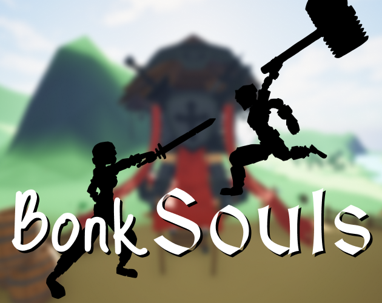

Bonk Souls
Take up the sword and kill the lord of bonk in a short & comedic soulslike boss fight.

1
May - June 2026
Programmer, Animator
Unreal
Take up the sword, peasant! Your Lord has failed you! It is time for you to rise, take his pitiful head, and his throne!
Bonk Souls is a short, comedic mini-soulslike where you must seize the throne from your village lord. Slash, strike, and
dodge your way through a uniquely goofy but still difficult boss battle.
Just... don't get bonked.
Individual Contributions:
- Utilized Control Rig to create 17 unique animations for the boss and player, and modified 21 other pre-existing animations.
- Learned Unreal's Level Sequence system to create the pre-battle cutscene.
- Used Behavior Trees to design boss AI that adapts to the player.
- Added environment destruction to the cutscene using Chaos Physics.
- Practiced clean blueprint organization using comments, functions, and macros which was praised by the class professor.
- Designed and built the village environment using free FAB assets
Check out the project week by week!
Project Background
This project was made for a summer class designed to introduce students to Unreal Engine.
Although I had already worked in Unreal before, this was a chance to expand my skillset within the tool. I challenged myself to
scope higher than I normally would by making a souslike, and I specifically focused on trying to learn Unreal's animation tools.
Why a souslike? I've never been a soulslike player, but right before the class started,
I finished my first playthrough of Elden Ring and was fascinated by the experience. This project was my opportunity to
dive deep into the design semantics that make souslikes so satisfying by making a mini-one myself.